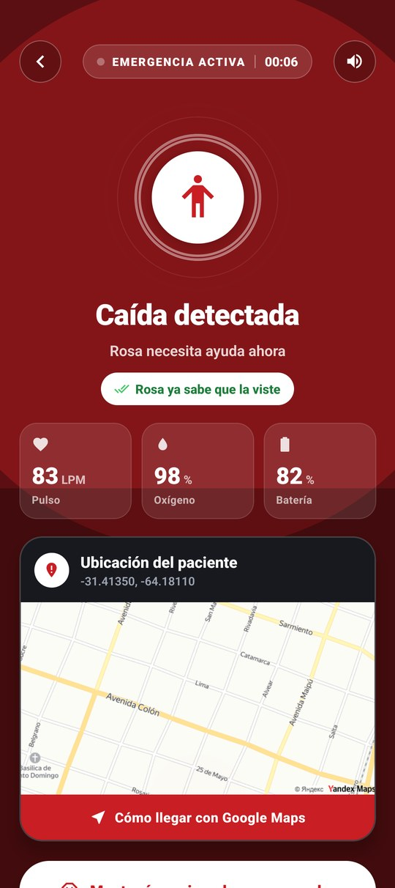

● CAÍDA DETECTADARosa necesita ayuda · ubicación enviada
VitaLink
La pulsera que avisa cuando alguien se cae
0
adultos mayores viven solos en Argentina
Censo INDEC
Una caída.
Nadie se entera.
Nadie se entera.
Y cada minuto en el piso cuenta.
VitaLink
se da cuenta.
se da cuenta.
Detecta la caída sola, en segundos.
Y avisa
a tu familia.
a tu familia.
Con su ubicación, al instante.
Tres toques
piden ayuda.
piden ayuda.
Sin pantallas. Sin menús. Sin complicaciones.
123
Se carga
sin sacártela.
sin sacártela.
El cargador se apoya encima: nunca queda desprotegida.
Proyecto integrador · 7.° B Electrónica · ITS Villada
VitaLink
Cuidado inteligente para quienes más querés
Franco Castillo · Valentín Cerri · Francisco Salatín · Santiago Virgolini
Y mide
tu pulso.
tu pulso.
Pulso y oxígeno, en vivo para tu familia.
72LPM
98% oxígeno
MANUAL · R vuelve al automático
VitaLink · ITS Villada